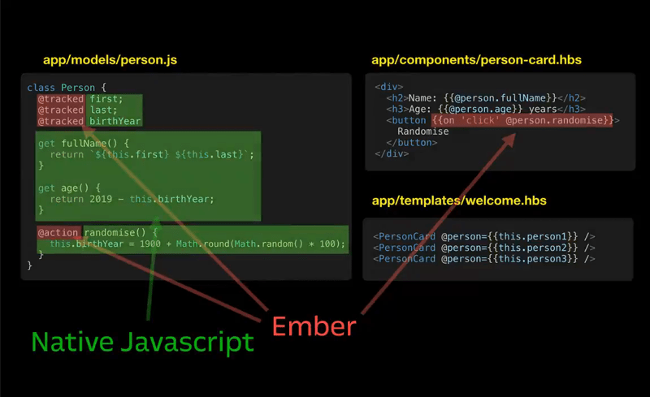
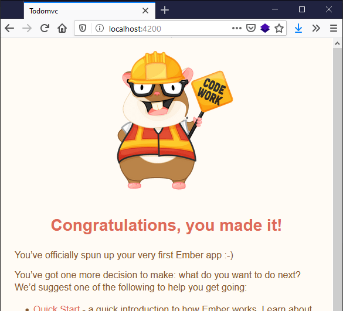

In our first Ember article we will look at how Ember works and what it's useful for, install the Ember toolchain locally, create a sample app, and then do some initial setup to get it ready for development.
| Prerequisites: |
At minimum, it is recommended that you are familiar with the core HTML, CSS, and JavaScript languages, and have knowledge of the terminal/command line. A deeper understanding of modern JavaScript features (such as classes, modules, etc), will be extremely beneficial, as Ember makes heavy use of them. |
|---|---|
| Objective: | To learn how to install Ember, and create a starter app. |
Ember is a component-service framework that focuses on the overall web application development experience, minimizing the trivial differences between applications — all while being a modern and light layer on top of native JavaScript. Ember also has immense backwards and forwards compatibility to help businesses stay up to date with the latest versions of Ember and latest community-driven conventions.
What does it mean to be a component-service framework? Components are individual bundles of behavior, style, and markup — much like what other frontend frameworks provide, such as React, Vue, and Angular. The service side provides long-lived shared state, behavior, and an interface to integrating with other libraries or systems. For example, the Router (which will be mentioned later in this tutorial) is a service. Components and Services make up the majority of any EmberJS application.
Generally, EmberJS works well for building apps that desire either or both of the following traits:
EmberJS has a plugin architecture, which means that add-ons can be installed and provide additional functionality without much, if any, configuration.
Examples include:
Ember can also be used with native mobile apps with a native-mobile bridge to JavaScript, such as that provided by Corber.
EmberJS is one of the most opinionated front-end frameworks out there. But what does it mean to be opinionated? In Ember, opinions are a set of conventions that help increase the efficiency of developers at the cost of having to learn those conventions. As conventions are defined and shared, the opinions that back those conventions help reduce the menial differences between apps — a common goal among all opinionated frameworks, across any language and ecosystem. Developers are then more easily able to switch between projects and applications without having to completely relearn the architecture, patterns, conventions, etc.
As you work through this series of tutorials, you'll notice Ember's opinions — such as strict naming conventions of component files.
Ember is built on JavaScript technologies and is a thin layer on top of traditional object-oriented programming, while still allowing developers to utilize functional programming techniques.
Ember makes use of two main syntaxes:
The templating language is used to make build and runtime optimizations that otherwise wouldn't be possible. Most importantly, it is a superset of HTML — meaning that anyone who knows HTML can make meaningful contributions to any Ember project with minimal fear of breaking code. Designers and other non-developers can contribute to page templates without any knowledge of JavaScript, and interactivity can be added later.
This language also enables lighter asset payloads due to compiling the templates into a "byte code" that can be parsed faster than JavaScript. The Glimmer VM enables extremely fast DOM change tracking without the need to manage and diff a cached virtual representation (which is a common approach to mitigating the slow I/O of DOM changes).
For more information on the technical aspects of The Glimmer VM, the github repository has some documentation — specifically, References and Validators may be of interest.
Everything else in Ember is just JavaScript. In particular, JavaScript classes. This is where most of the "framework" parts come into play, as there are superclasses, where each type of thing has a different purpose and different expected location within your project.
Here is a demonstration the impact Ember has on the JavaScript that is in typical projects:
Gavin Demonstrates how < 20% of the JS written is specific to Ember.

The rest of the Ember material you'll find here consists of a multi-part tutorial, in which we'll make a version of the classic TodoMVC sample app, teaching you how to use the essentials of the Ember framework along the way. TodoMVC is a basic to-do tracking app implemented in many different technologies.
Here is the completed Ember version, for reference.
The TodoMVC project has a few issues in terms of adhering to accessible/default web practices. There are a couple of GitHub issues open about this on the TodoMVC family of projects:
Ember has a strong commitment to being accessible by default and there is an entire section of the Ember Guides on accessibility on what it means for website / app design.
That said, because this tutorial is a focus on the JavaScript side of making a small web application, TodoMVC's value comes from providing pre-made CSS and recommended HTML structure, which eliminates small differences between implementations, allowing for easier comparison. Later on in the tutorial, we'll focus on adding code to our application to fix some of TodoMVC's biggest faults.
Ember uses a command-line interface (CLI) tool for building and scaffolding parts of your application.
You'll need node and npm installed before you can install ember-cli. Go here to find out how to install node and npm, if you haven't already got them.
Now type the following into your terminal to install ember-cli:
npm install -g ember-cli
This tool provides the ember program in your terminal, which is used to create, build, develop, test, and scaffold your application (run ember --help for a full list of commands and their options).
To create a brand new application, type the following in your terminal. This creates a new directory inside the current directory you are in called todomvc, containing the scaffolding for a new Ember app. Make sure you navigate to somewhere appropriate in the terminal before you run it. (Good suggestions are your "desktop" or "documents" directories, so that it is easy to find):
ember new todomvc
Or, on Windows:
npx ember-cli new todomvc
This generates a production-ready application development environment that includes the following features by default:
You'll need a code editor before continuing to interact with your brand new project. If you don't have one configured already, The Ember Atlas has some guides on how to set up various editors.
Installing shared assets, as we're about to do, isn't normally a required step for new projects, but it allows us to use existing shared CSS so we don't need to try to guess at what CSS is needed to create the TodoMVC styles.
First, enter into your todomvc directory in the terminal, for example using cd todomvc in macOS/Linux.
Now run the following command to place the common todomvc CSS inside your app:
npm install --save-dev todomvc-app-css todomvc-common
Next, find the ember-cli-build.js file inside the todomvc directory (it's right there inside the root) and open it in your chosen code editor. ember-cli-build.js is responsible for configuring details about how your project is built — including bundling all your files together, asset minification, and creating sourcemaps — with reasonable defaults, so you don't typically need to worry about this file.
We will however add lines to the ember-cli-build.js file to import our shared CSS files, so that they become part of our build without having to explicitly @import them into the app.css file (this would require URL rewrites at build time and therefore be less efficient and more complicated to set up).
In ember-cli-build.js, find the following code:
let app = new EmberApp(defaults, {
// Add options here
});
Add the following lines underneath it before saving the file:
app.import('node_modules/todomvc-common/base.css');
app.import('node_modules/todomvc-app-css/index.css');
For more information on what ember-cli-build.js does, and for other ways in which you can customize your build / pipeline, the Ember Guides have a page on Addons and Dependencies.
Finally, find app.css, located at app/styles/app.css, and paste in the following:
:focus,
.view label:focus,
.todo-list li .toggle:focus + label,
.toggle-all:focus + label {
/* !important needed because todomvc styles deliberately disable the outline */
outline: #d86f95 solid !important;
}
This CSS overrides some of the styles provided by the todomvc-app-css npm package, therefore allowing keyboard focus to be visible. This goes some way towards fixing one of the major accessibility disadvantages of the default TodoMVC app.
You may start the app in development mode by typing the following command in your terminal, while inside the todomvc directory:
ember server
This should give you an output similar to the following:
Build successful (190ms) – Serving on http://localhost:4200/ Slowest Nodes (totalTime >= 5%) | Total (avg) -----------------------------------------+----------- BroccoliMergeTrees (17) | 35ms (2 ms) Package /assets/vendor.js (1) | 13ms Concat: Vendor Styles/assets/vend... (1) | 12ms
The development server launches at http://localhost:4200, which you can visit in your browser to check out what your work looks like so far.
If everything is working correctly, you should see a page like this:

Note: on Windows systems without Windows Subsystem for Linux (WSL), you will experience slower build-times overall compared to macOS, Linux, and Windows with WSL.
So far so good. We've got to the point where we can start build up our sample TodoMVC app in Ember. In the next article we'll look at building up the markup structure of our app, as a group of logical components.
{{PreviousMenuNext("Learn/Tools_and_testing/Client-side_JavaScript_frameworks/React_resources","Learn/Tools_and_testing/Client-side_JavaScript_frameworks/Ember_structure_componentization", "Learn/Tools_and_testing/Client-side_JavaScript_frameworks")}}